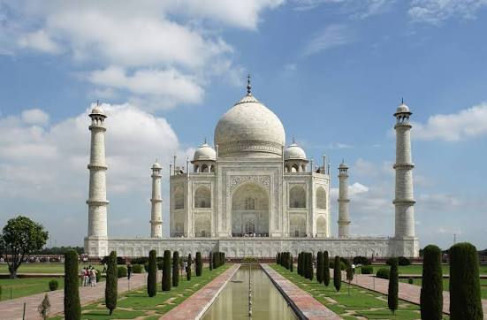
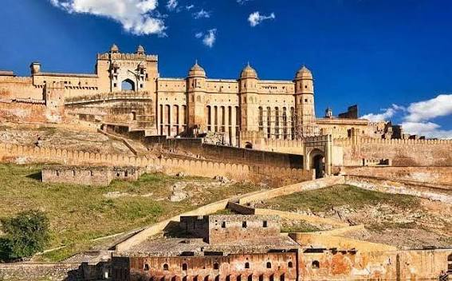
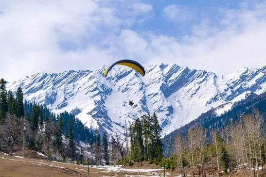
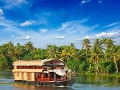

Home | Destinations | Foods | Places | Gallery | Contact
A white marble monument built by Shah Jahan in memory of his wife. It is one of the Seven Wonders of the World.

A beautiful hilltop fort in the Pink City with big courtyards and mirror work halls.

A lively beach known for water sports, shacks, and sunsets.

A snowy valley where people enjoy skiing, paragliding and mountain views.

Calm green canals where you can stay on a houseboat and watch village life go by.
